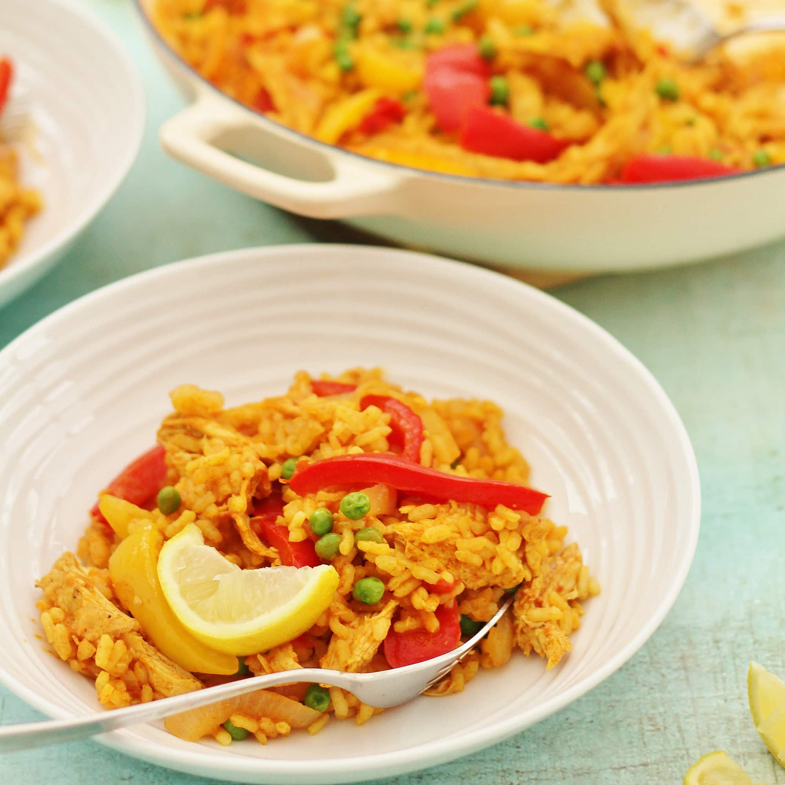

🍚 Paella Recipe

Description
Paella is a traditional Spanish dish that originates from the Valencia region.
It is a rice-based dish that is typically made with a variety of ingredients such as chicken, rabbit, shellfish, and vegetables.
Ingredients
- 12 lasagna noodles
- 1 ground beef
- 1 onion, diced
- 2 cloves garlic, minced
- 1 (24 oz) jar marinara sauce
- 1 (15 oz) container ricotta cheese
- 1 egg
- 1/4 cup grated Parmesan cheese
- 2 cups shredded mozzarella cheese
- Salt and pepper, to taste
- 1/4 cup olive oil
- 1 onion, diced
- 2 cloves garlic, minced
- 1 red bell pepper, diced
- 1 cup short-grain Spanish rice
- 2 cups chicken broth
- 1 cup seafood stock or water
- 1 teaspoon paprika
- 1/2 teaspoon saffron threads
- Salt and pepper, to taste
- 8 oz chicken thighs or breasts, cut into bite-size pieces
- 8 oz chorizo sausage, sliced
- 8 oz uncooked shrimp, peeled and deveined
- 8 oz mussels, scrubbed and debearded
- 8 oz clams, scrubbed
- Lemon wedges, for serving
- In a large paella pan or wide skillet, heat the olive oil over medium-high heat.
- Add the onion, garlic, and red bell pepper and cook until softened.
- Stir in the rice and cook for 1-2 minutes, until the rice is slightly toasted.
- Add the chicken broth, seafood stock or water, paprika, saffron threads, salt, and pepper. Bring to a simmer.
- Add the chicken, chorizo, shrimp, mussels, and clams. Cover and cook for 15-20 minutes, or until the rice is cooked and the seafood is cooked through.
- Remove from heat and let sit for 5 minutes before serving.
- Serve with lemon wedges on the side. Enjoy! 🦐🍲
Note: Paella is traditionally cooked in a large, shallow pan called a paellera, but a wide skillet or frying pan can also be used.